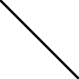
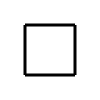
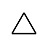
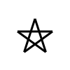
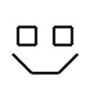

Énoncé
Dans cet exercice, nous allons jouer avec un très vieux langage de programmation que tous les écoliers des années 80 ont bien connu : le LOGO (page Wikipédia).
Ce langage, qui existe dans de très nombreuses versions différentes, permet de produire facilement des petits dessins vectoriels en utilisant la métaphore d’une tortue tenant un crayon dans sa bouche, pouvant baisser ou lever ce crayon, tourner à gauche ou à droite d’un angle donné, et avancer d’une distance donnée : si le crayon est baissé quand la tortue avance alors elle trace un trait, sinon elle ne fait que se déplacer.
L’animation ci-dessous illustre l’exécution d’une version purement
textuelle du LOGO où F voulait dire avancer
(d’une distance visiblement fixe), + tourner à gauche (d’un
angle fixe) et - tourner à droite.
On va réutiliser le fichier SVG vu précédemment pour générer les
dessins. Comme tous les fichiers .go composant un programme
Go doivent être dans le même répertoire, une solution simple serait de
recopier le fichier svg.go dans le répertoire courant : ce
n’est pas une bonne idée de dupliquer des fichiers identiques, car cela
gâche de l’espace disque.
La bonne solution sous Unix est d’utiliser un lien symbolique (page
Wikipédia). Par exemple, si le fichier svg.go est dans
le répertoire ../TP_SVG/, il suffit de taper dans le
terminal : ln -s ../TP_SVG/svg.go pour créer un lien
symbolique que l’on peut visualiser en exécutant ls -al :
le lien s’affiche sous la forme
svg.go -> ../TP_SVG/svg.go. Une fois le lien créé, toute
lecture ou modification de svg.go depuis le répertoire
courant sera appliquée au fichier original de façon transparente.
Écrire un fichier logo.go contenant :
- une variable globale
positionTortuede typepointSVGinitialisée à{0, 0}; - une variable globale
angleTortuede type flottant sur 64 bits et initialisée à90.0. - une variable globale
crayonEnBasde type booléen initialisée àfalse;
Ces variables vont représenter l’état interne de notre programme :
- où se situe la tortue dans le repère orthonormé dont l’origine (0, 0) est positionnée « en haut à gauche » de l’image, ce qui implique que les ordonnées sont croissantes vers le bas ;
- dans quelle direction regarde la tortue, c’est-à-dire son angle actuel dans le sens trigonométrique habituel (inverse des aiguilles d’une montre) ;
- est-ce que la tortue va écrire quand on l’avance, ou simplement se déplacer.
On rappelle qu’on ne peut pas utiliser la syntaxe condensée avec
:= quand on déclare des variables globales, on doit
utiliser la syntaxe avec le mot-clé var. Par exemple :
var angleTortue float64 = 90.0 ou pour une structure
var positionTortue = pointSVG{0, 0} (qui est une façon
condensée d’écrire
var positionTortue pointSVG = pointSVG{0, 0} pour ceux qui
se poseraient la question).
Compléter ce fichier en implantant les fonctions suivantes :
avanceTortue(distance float64): cette fonction fait avancer la tortue en ligne droite du nombre de points passé en paramètre : elle doit donc mettre à jourpositionTortue. Cette fonction doit également tracer un trait si le crayon est baissé au moment où l’on avance ;tourneTortueGauche(deltaAngle float64): cette fonction fait tourner la tortue vers la gauche (c’est-à-dire dans le sens trigonométrique) de l’angle passé en paramètre et exprimé en degrés : elle doit donc mettre à jourangleTortue;tourneTortueDroite(deltaAngle float64): comme la précédente, mais dans l’autre sens ;baisseCrayon()etleveCrayon(): ces fonctions affectent le booléencrayonEnBasavec la valeur appropriée.
On aura surement besoin des fonctions math.Cos (documentation),
math.Sin (documentation) ainsi que de la
constante math.Pi (documentation) pour écrire
avanceTortue, et on notera que sinus et cosinus
attendent des paramètres exprimés en radians. On rappelle que
:
Écrire maintenant un fichier test_logo.go contenant la
fonction main qui va permettre de tester les fonctions
précédentes en générant des petits dessins SVG en utilisant la tortue
dessinatrice. Vous créerez une fonction séparée pour chaque test. Pour
vous aider, on vous donne la fonction générant le premier dessin :
func trait() {
fmt.Println(debutImageSVG(100, 100))
fmt.Println(debutGroupeSVG("black", "white", 3))
tourneTortueDroite(135)
baisseCrayon()
avanceTortue(math.Sqrt2 * 100.0)
fmt.Println(finGroupeSVG())
fmt.Println(finImageSVG())
}Images SVG à produire (ou du moins pour la dernière, quelque chose qui y ressemble) :
    